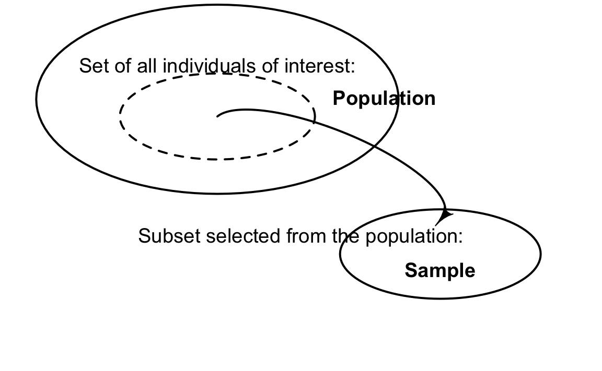
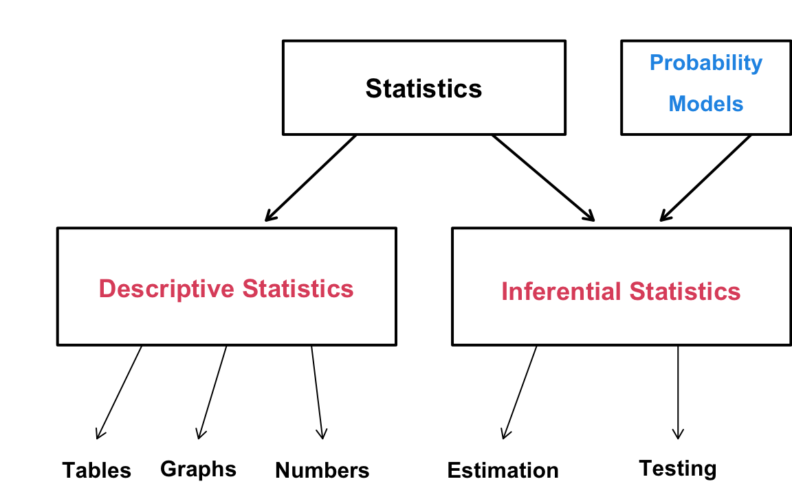

1 Statistics as a Science of Data
1.1 What is statistics?
The first question we ask in this book is “What is Statistics?”
Statistics can be defined in a variety of ways, and there doesn’t seem to be one definition that describes it best. In everyday language, people use the word statistics in two common ways.
- Statistics as numeric records.
A news story might report unemployment statistics, or a sports site might list a player’s career statistics. For example, Figure 1.1 below shows Michael Jordan’s career statistics from his time in the NBA.
- Statistics as a discipline.
In this book, statistics is a way of thinking that uses data to learn about what we are interested while explicitly accounting for uncertainty.
NoteA practical definition we will use
The American Statistical Association describes statistics as the science of learning from data and of measuring, controlling, and communicating uncertainty. 1
This definition matches the main theme of this textbook: we learn from data by building and using statistical models.
1.2 Data are numbers with context
A key idea for modern statistics is that data are not just numbers. Data can be numbers, labels, images, text, and other records with a context such as how they were produced, what they measure, and what they represent in the real world. Cobb and Moore famously summarized this as “data are numbers with a context.”2
When you look at a dataset, you should be able to answer:
- Who or what subject was measured? (people, schools, products, days, patients)
- What attributes or characteristics of the subject were recorded? (height, income, blood pressure, response time)
- How were the data generated? (survey, observational study, experiment, administrative records)
1.3 Populations, samples, and statistics
Statistics is often about learning something about a population using a sample.
A population is the full set of individuals or situations you care about.
A sample is a subset of the target population.
Usually, the data we have is from a subset of the target population, and hence we call the data sample data. When the data include all subjects in the population, such data set is called census data.

A statistic is any numerical summary computed from the sample (for example, a sample mean). A parameter is a number that describes the population or the data generating process (for example, a population mean).
1.4 How are data generated? [PUT IN NEXT CHAPTER]
Data are produced by a process, and that process determines what kinds of conclusions are reasonable.
Common data sources include:
Surveys and questionnaires We ask questions and record responses. Survey design affects bias and variability.
Observational studies We record variables as they naturally occur. Observational data can reveal association but do not automatically justify cause and effect claims.
Experiments We actively assign a treatment or condition. Random assignment is the key tool for supporting causal conclusions.
Administrative and digital records These include logs, transactions, medical records, sensors, and digital traces. These datasets can be large, but they still require careful thinking about measurement and selection.
A useful phrase is data generating process: the real world mechanism that produces the values we observe. In a model-based approach, we build a probability model as an approximation to that process.
1.5 Statistics and data science
Statistics and data science overlap heavily. Both aim to learn from data, and both use modeling.
Wiki lists a more formal definition of statistics in Figure 1.3 below.

Statistics is the discipline that concerns the collection, organization, analysis, interpretation, and presentation of data. Without doubt, statistics is a discipline dealing with data. However, in typical statistics departments, there isn’t much instruction or research done on data collection, cleaning, storage, database management, and data visualization. Because statistics continues to focus on data analysis and modeling, Data Science now addresses these other processes that statistics passes over.
A common way to describe the difference is emphasis.
Statistics emphasizes study design, uncertainty quantification, and inference from data to a broader target (a population, a process, or future outcomes).
Data science includes those statistical goals but also emphasizes data acquisition, data management, computing, and deployment of models in real systems.
A helpful reference point is the National Academies report on undergraduate data science, which treats data science as an emerging discipline related to, but not identical to, statistics and computer science.3
This book is not a complete data science handbook. It focuses on the part that statistics has historically done best and that modern data work still needs: model-based reasoning with uncertainty.
1.6 Describing data vs learning from data
A good analysis usually starts with descriptive summaries and then moves toward inference.
Descriptive statistics organizes and summarizes the observed data. Examples include tables, graphs, and numerical summaries such as means and medians.
Inferential statistics (statistical inference) uses data to learn about something you did not fully observe. Examples include estimating an unknown parameter, predicting a future outcome, or comparing groups while quantifying uncertainty. When doing statistical inference we usually build a probability model to account for data variability, and quantify uncertainty. We assume the sample data are realizations of values generated from that model. Therefore, the model works as a data-generating process or mechanism.

1.7 Model-based statistical thinking [CHAPTER 7]
Model-based statistics starts from a basic idea.
- Data vary. Even repeated measurements under similar conditions do not produce identical values.
- We represent that variation with probability. We treat data as outcomes of random variables and write down a probability model.
- We learn about unknowns through the model. Unknown quantities are usually model parameters (such as a mean difference, a rate, or a regression slope).
A statistical model is a set of assumptions that connects:
- the data we observe,
- the chance variation we expect, and
- the unknown quantities we want to learn about.
1.7.1 A model-based workflow
In this book, we will repeatedly follow a workflow like this.
- State the question in plain language.
- Identify the data and variables (and how they were generated).
- Propose a probability model for the data generating process.
- Fit the model (estimate unknown parameters).
- Check the model (does it capture important patterns and variability?).
- Draw conclusions with uncertainty clearly communicated.
1.8 Frequentist and Bayesian paradigms [CHAPTER 8]
Model-based inference can be done in both frequentist and Bayesian ways. The two paradigms share a common starting point:
- a probability model for the data (often expressed through a likelihood)
They differ mainly in how they treat unknown parameters and how they interpret probability statements.
1.8.1 Frequentist inference
In a frequentist approach:
- the parameter is treated as a fixed (but unknown) constant
- uncertainty is described by what would happen under repeated sampling
Typical outputs include point estimates, confidence intervals, and hypothesis tests.
1.8.2 Bayesian inference
In a Bayesian approach:
- the parameter is treated as an unknown quantity with a probability distribution
- we update prior beliefs using the data to obtain a posterior distribution
Typical outputs include posterior means or medians, credible intervals, and posterior probabilities of scientific statements.
TipHow this book will connect them
You will see frequentist and Bayesian tools side by side, using the same underlying probability models whenever possible. The goal is to build one coherent story:
- probability models describe variation
- inference is parameter learning from data
- different paradigms provide different summaries of uncertainty
1.9 Where we are going next
This chapter sets the stage: statistics is a science of data because it turns data into knowledge while managing uncertainty.
In the next chapters of Part 1, you will:
- learn how data are produced and how design affects conclusions
- practice describing single variables and relationships between variables
- introduce probability as a language for modeling data
- develop the logic of inference through model-based thinking in both frequentist and Bayesian forms
American Statistical Association, ASA Newsroom. “Statistics is the science of learning from data and of measuring, controlling, and communicating uncertainty.” https://www.amstat.org/asa-newsroom↩︎
Cobb, G. W., and Moore, D. S. (1997). “Mathematics, Statistics, and Teaching.” The American Mathematical Monthly, 104(9), 801–823. The quote “Data are numbers with a context” is widely attributed to this paper. See, for example, the CRAN statquotes vignette: https://cran.r-project.org/web/packages/statquotes/vignettes/statquotes.html↩︎
National Academies of Sciences, Engineering, and Medicine (2018). Data Science for Undergraduates: Opportunities and Options. Washington, DC: The National Academies Press. https://nap.nationalacademies.org/catalog/25104/data-science-for-undergraduates-opportunities-and-options↩︎